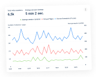
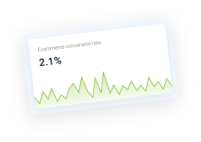

How to do a Website Audit to Improve SEO & Conversions
Usability auditing with the Plerdy tool is a comprehensive expert assessment of your website based on a profound study of user behavior registered on it. Plerdy will provide you with crucial data based on which you will be able to run an efficient usability audit of your website, identify and fix SEO issues, and subsequently lead it to higher positions in search.
Thus, you'll compile a list of flaws in your website interface, navigation, and conversion path that can eventually affect its micro and macro conversion rates.
Trusted by some of the world's largest enterprises
softserve

